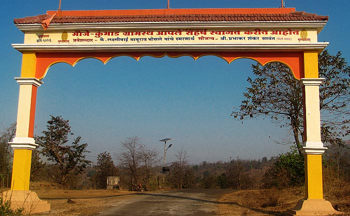
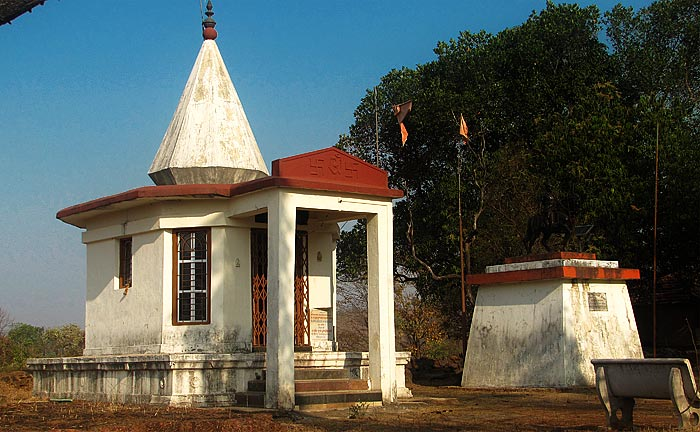
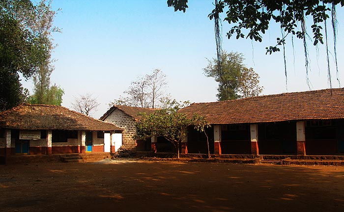
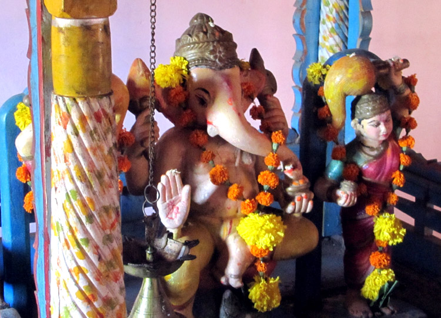
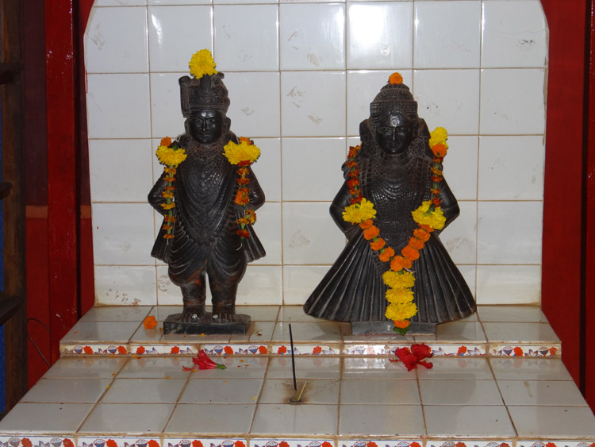
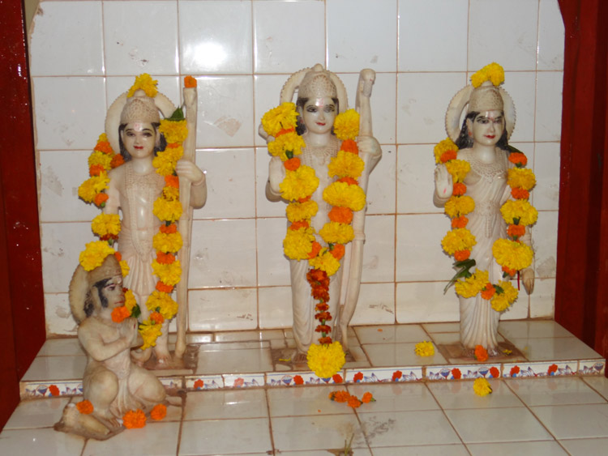

ABOUT KUMBHAD VILLAGE
Many of us may be aware of that in the religious tradition AWATAR is an imagination. God Vishnu had 10 Awataras. In Vishwa Yuga they appeared for the wellbeing of the universe. The creator of KOKAN , God Parshurama is presumed as the sixth Awatara in that setup. Renuka,mother of God Parshurama was also known as KUNKANA and thus the name KONKAN has emerged out of this which has references of Puranas.

Location
The land of Sapta Konkan which became the holy land due to the existence of God Parshurama , there lies the village KUMBHAD, in the Khed Taluka of Ratnagiri District. It is placed at the foot of the fort CHAKRADEVA . Though it is a small village having a population of about 1800 villagers,it is so structured that it looks like a town.(Peth).
One is attracted towards a huge ARCH at the entrance of the village welcoming everybody,and the moment you enter into this Arch, on your left , you are attracted towards a huge bronze metal statue of the great Maratha leader SHRI SHIVA CHATRAPATI SHIVAJI MAHARAJ.
The Primary School and a temple of Shree DUTTA is also a part of this complex . As you proceed towards the main village (about 1 Km),the typical mangalore tile (earthen tiles) houses of MARATHA COMMUNITY (Bhosales) are seen on your both sides till the north end of the village where the main Temple (newly erected )of God Shree Kedar is located. In the same premises of Shree Kedar temple, there is a small and very fascinating lord Shiva's temple-Shree Mahaadeo Mandir. The small temples of Ganesha and Hanuman do attract your attention. Towards the west, a river named Kumbharli flows (only in rainy season) beyond which the Kumbhar Community (Earthen Pot Makers)houses are located. And towards east, resides the Baudh and Cobbler community . This is how a typical Kokan village Kumbhad can be described.



Mandirs in Kumbhad




VOLUNTARY INSTITUTIONS OF KUMBHAD
(ON THE PRINCIPAL OF BY THE VILLAGERS FOR THE VILLAGERS):
With a view to cater to the different needs in the areas of Agriculture, Social Forestry, Credit needs, day to day management of the Temples, Sports, Education, community living etc at the village, and Mumbai and Pune,the villagers have formed as many as 14 Voluntary Institutions which are registered under Public Trust Act, and Society Registration Act. The first two such institutions namely SHREE DEO KEDAR DEOSTHAN and GRAM VIKAS SANGH MUMBAI have marked their Golden Jubilee year.
THE INSTITUTIONS
- 1. GRAM VIKAS SANGH KUMBHAD,MUMBAI
- 2. SHREE DEO KEDAR DEOSTAH N TRUST, KUMBHAD
- 3. SHREE DEDAR DEOSTHAN KUMBHAD
- 4. GRAM SEVA SANGH KUMBHAD, PUNE
- 5. KOKANSTHA KUMBHAR GRAMVIKAS SANGH,KUMBHAD, PUNE
- 6. SANT SHIROMANI GOROBAKAKA SAMAJIK SANSTHA, PUNE
- 7. BAUDHA SAMAJ SEVA SANGH, KUMBHAD, MUMBAI
- 8. LATE KESHAVRAO BHOSALE PRATISTHAN
- 9. LATE LAXMI CHHAYA KRIDA PRATISTHAN
- 10. JAI HANUMAN MITRA MANDAL, KUMBHAD
- 11. SANYUKTA VAN VYAVASTHAPAN SAMITI KUMBHAD
- 12. SHETKARI MANDALACHA SANGH KUMBHAD
- 13. VIVIDHA KARYAKARI SANGHATANA , MAVALATI NIMAY, KUMBHAD
- 14. VIVIDH KARYAKARI SOCIETY , KUMBHAD